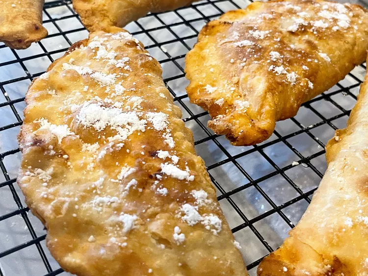

Apricot Peach Pie

Description
Apricot and peach fried pies have the best flavor of any fried pie I've ever eaten.
Ingredients
Dough
- 4 cups all-purpose flour
- 2 teaspoons salt
- 1 cup shortening
- 1 cup milk
Filling
- 8 ounces dried apricots
- 1 (6 ounce) package dried peaches
- 3/4 cup white sugar
- Water to cover
- 2 cups vegetable oil for frying
Steps
- To Make Crust: In a large bowl, mix together flour and salt. Cut in shortening until mixture is crumbly. Mix in milk and stir until dough forms a ball. Roll out dough and cut into 18 6-inch circles. Set aside.
- To Make Filling: In a large saucepan, combine apricots, peaches, and sugar. Add enough water to cover fruit. Cover pan and cook over low heat until fruit is falling apart. Remove lid and continue to cook until water is evaporated.
- Place oil or shortening in small high-sided skillet. Place over medium heat. Spoon equal amounts of filling into each pastry circle and fold in half. Seal pastry with a fork dipped in cold water.
- Fry a few pies at a time in hot oil, browning on both sides. Drain pies on paper towels.
- Enjoy!
Home